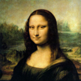
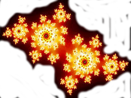

Live Demo


The green line shows which part of the data is being adjusted.
Choose an image to optimise.
Upload your own image.

Approximating the Mona Lisa with mathematics
Description
Optimisation algorithms find approximate solutions to problems that are too difficult to solve using normal techniques. They are a last-resort solution, because they are slow and will not always give a useful result.
You would choose an optimisation heuristic when
- you can't think of the correct formula
- the problem is too big or complex to use traditional modelling
- There isn't one correct solution
The demonstration on this page solves a trivial problem: to re-create a picture, using only coloured triangles.
The computer starts off with a random selection of triangles, then moves them around one by one until it has the best copy it can make. You can watch this happening above, as the computer draws each triangle over the picture to see how it fits, then moves it and tries again.
The demonstration switches between three modes. The "hill climber" algorithm, a simulated anneal, and an "extremal" algorithm, which finds any triangles which have disappeared and moves them to a random position.
Background
In 2008, Roger Alsing posted his code to draw the Mona Lisa using Genetic Evolution techniques. This is my response, inspired by his project. I made some minor changes to the original design; I use triangles instead of random polygons, and I use a different optimisation technique. Despite this, or perhaps because of it, I get a pleasant abstracted picture.
I use two optimisation techniques, a hill climber, and an extremal algorithm. The hill climber examines nearby positions in the solution space, and picks the one that gives the greatest improvement to the picture. You can see this process in the picture above, as each corner of the triangle moves around to find a better fit. Hill climbers are easy to understand and implement, but they have a drawback - they get stuck on a local maxima, resulting in a picture that is only half done. For instance, a triangle might work better on the other side of the picture, but there is no way for it to jump all the way across.
To improve on the hill-climber, I do a round of extremal optimisation in between each round of hill-climbing. The extremal algorithm finds the triangles that aren't contributing much to the picture, and randomly moves them to a new part of the picture. This catches triangles that the hill-climber has made invisible, sometimes by making them into thin lines, sometimes by turning them completely transparent. Randomising the values allows a triangle to escape the local maximas, and thus moves the result closer to the 'ideal' picture.
The original program uses genetic algorithms to adjust the polygons, and according to the author's report, the genetic algorithm converges faster than this hill climber. This is what we would normally expect. Hill climbers tend to converge slowly, but are easier to understand.